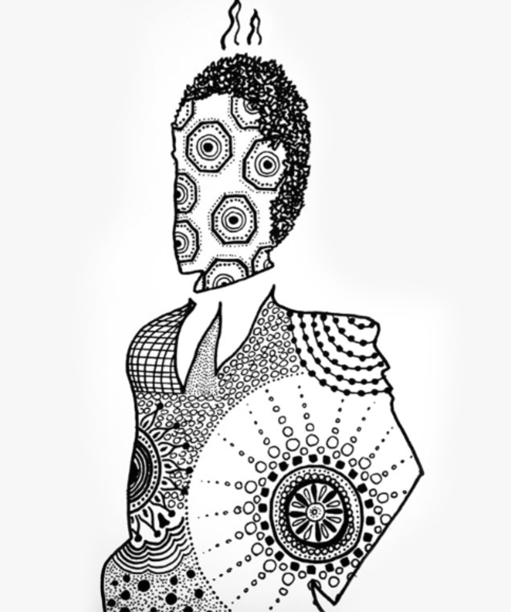

Es extraño tratar de recordar algo que aún no ha sucedido; pero más extraño es el sentimiento de anhelo a algo que jamás viviste. Precisamente esto es lo que queremos rescatar. La obra de arte existe mucho antes de haber sido creada, y como meros canales de esa perfección, elaboramos una copia de esa pieza “universal”. Cualquier ser humano, en la medida en que esté atento y dotado de la suficiente claridad, es capaz de “crear” una obra de arte. Y la razón por la que creemos más oportuno entrecomillar el termino crear es porque, como más arriba se menciona, la obra ya existe. Nosotros tan solo la reproducimos. Y esta reproducción, por tanto, se lleva a cabo en un escenario donde el canal tiene una libertad limitada de expresión, dentro de la unidad de la obra. Con esto nos referimos a que, el artista es libre en la elaboración de la pieza hasta cierto punto pues la obra ya es, sólo tiene que encontrarnos, y nosotros estar lo suficientemente lúcidos como para captarla. Sería algo parecido a vivir dentro de un árbol. Podremos movernos libremente por él y trepar por cada una de sus ramas, pudiendo parar a descansar o a probar alguno de sus frutos, pero esa libertad de movimiento no será del todo infinita pues no debemos olvidar que, al fin y al cabo, estamos en ese árbol en concreto, y no en todo el bosque. Y aunque estuviéramos en el bosque, no estaríamos en todos los bosques, y aunque así fuera, no estaríamos en cualquier otro escenario, del que también brotase la inspiración.
La obra nos llegará, como todo arte, tratando de imitar la naturaleza, pues nace de ella, y en el transcurso de su vida se dirigirá también a ella, respetando su carácter cíclico. Una gota de agua que cae repetidamente sobre un panel solar podría parecer en un primer momento incordiante, hasta que más tarde, al variar su frecuencia y amplitud de onda, pueda redirigir su razón de ser hasta convertirse en la base instrumental de una canción de soul. “La intuición es la verdadera naturaleza de la existencia”. El artista intuye, el artista capta, el artista filtra, el artista reproduce. La obra de arte cobra forma física. La obra es intuida por otros, captada por otros, filtrada y re-reproducida. El arte se multiplica. Vive y se transforma. Es Unidad.
Nos hemos preguntado más de una vez como sucede ese fenómeno en el que no hacemos nada, y de repente sucede todo. Como si durante unos segundos fuéramos poseídos por algo ajeno a nuestro rango alma-mente-cuerpo que entra por nuestra cabeza, baja por el tracto respiratorio hasta el corazón y después de habitarnos durante un rato sale en forma de creación por nuestras manos. Y de pronto tenemos en frente de nosotros una ilustración, una escultura, una fotografía o una canción que apenas nos creemos haber sido capaces de crear. Puede que un termino acertado para referirse a ello sea la “inspiración”, que después de unos minutos se convierte en espiración o expiración –pues lo sueltas, y termina.
El espacio me detuvo
y de pronto comprendí
que nada de lo que había
me pertenecía.
No quise empeñarme en adueñarme de ello
pero el simple hecho de sostenerlo
me
mantenía viva.